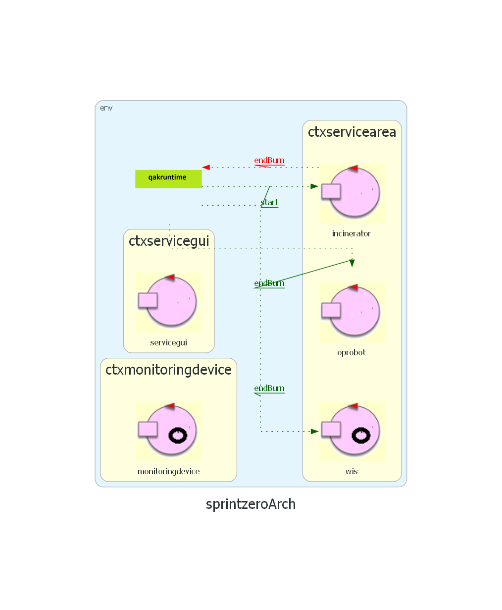

Introduction
Analisi dei Requisiti
Descrizione della stanza:
Si fa riferimento ad un sistema con un DDR robot, in una stanza che presenta al suo interno un compnente inceneritore e un ostacolo.
- La stanza (Service Area) e' uno spazio euclideo delimitato da bordi
- I vertici dei bordi sono (0,0) (0,MY) (MX,MY) (MX,0), dove MX,MY sono dimensioni da definire con il committente
- La stanza e' rettangolare
- HOME e' una sezione rettangolare percorribile con vertici in (0,MY) (X,MY) (X,Y) (0,Y)
- WASTEIN e' un segmento di vertici (0,0) (X,0)
- ASHOUT e' un segmento di vertici (X,0) (MX,0)
- INCENERATOR e' una struttura rettangolare definita dai punti A,B,C,D ; non percorribile e che presenta BurnIn sul segmento A,B e BurnOut sul segmento A,D. I punti sono coordinate da definire con il committente.
- OSTACOLO e' una struttura non percorribile definita dai punti A1,B1;C1;D1. I punti sono coordinate da definire con il committente
- Il DDR robot puo' essere visto come occupante di un area circolare DR=2R dove R e' il raggio dell' area
Componenti e Modello Comportamentale:
I componenti necessari inizialmente per la realizzazione del sistema sono:
-
DDR Robot:
- Viene fornito dal committente insieme al software di controllo, ovvero BasicRobot24
-
BasicRobot24:
- Muove il robot fisico e virtuale
- Descrizione fornita:
basicRobot24
-
OpRobot
- L'OpRobot usa il DDR robot come attuatore fisico del suo comportamento
- Puo' muoversi in diverse direzioni (HOME, WASTEIN, ASHOUT, BURNIN, BURNOUT)
- Sosta in posizione HOME quando non c'e' lavoro da fare e quando l'inceneritore e' in fase di BURN
- Preleva gli RP da WASTEIN e li deposita nell' INCINERATOR attraverso BURNIN
- Preleva l'Ash attraverso AshOut e la deposita in ASHOUT
- Riceve messaggi da WIS e da INCINERATOR
- Invia istruzioni da BasicRobot24
- Potrebbe essere conveniente modellarlo come un "ACTOR" piuttosto che come un semplice "POJO", in quanto riceve e invia messaggi, ed ha un comportamento autonomo:
QakActors24
-
WIS:
- Dirige il sistema
- Ottiene informazioni da WASTESTORAGE , ASHSTORAGE e INCINERATOR
- Indirizza l'OpRobot
- Puo' anch'esso essere modellato come un "ACTOR", in quanto invia e riceve messaggi, costituendo un'entita' autonoma
-
Inceneritore:
- Riceve un messaggio wirless di attivazione
- Emette un segnale alla fine del processo di BURN
- Ottiene gli RP attraverso la BURNIN port, le ceneri sono estratte attraverso la BURNOUT port
- Il processo di Brun impiega BTIME secondi
- Puo' anch'esso essere modellato come un "ACTOR", in quanto invia e riceve messaggi, costituendo un'entita' autonoma
-
ServiceStatusGUI:
- Interfaccia utilizzata dall'utente per visualizzare lo stato del sistema
- E' stata fatta la scelta di modellarla come un ACTOR, anche se dal testo del committente ci sono poche informazioni per sapere con certezza che sia la scelta piu' conveniente. Tuttavia potrebbe essere utile l'abilita' di ricevere messaggi e autonomamente cambiare il proprio stato ed effettuare azioni.
-
Scale
- Monitora il peso degli RP, quindi la quantita' di RP presenti
-
MonitoringDevice:
- Usa un Sonar per misurare il livello della ceneri nel container
- Controlla il led, utilizzato come dispositivo di warning
- Viene implementato nel Raspberry
- Il Monitoring Device deve poter ottenere informazioni dalle altre entita' ed agire in base ad esse, quindi si puo' prendere la scelta di modellarlo come un "ACTOR"
Il documento del committente menziona solamente i messaggi inviati e ricevuti dall' Incinerator, senza pero' specificarne i particolari, come la semantica, che verranno affrontati nell'analisi del problema
Architettura Logica del modello

Primo modello di progetto: /sprint0.qak
Test Plans:
Test Case 1
Precondizioni:
Test Case 2
Precondizioni:
Sviluppi Futuri:
SPRINT1: Analisi del problema per i componenti WIS, OpRobot e Incinerator; e sviluppo dei relativi test
By Michele Armillotta email: michele.armillotta2@studio.unibo.it

By Nicole Giulianelli email: nicole.giulianelli@studio.unibo.it

GIT repo: https://github.com/NicoleGiulianelli2/TemaFinale2024